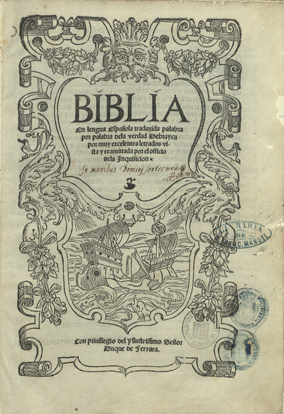
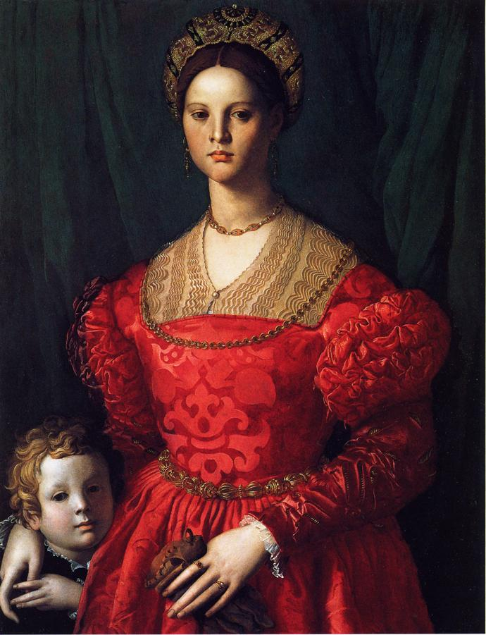
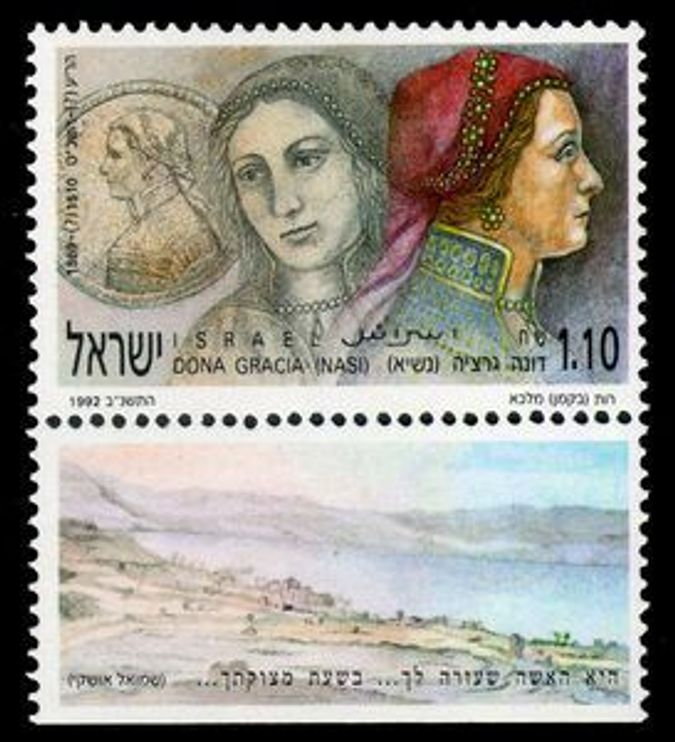
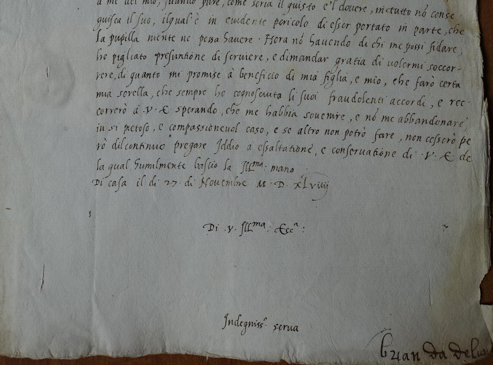
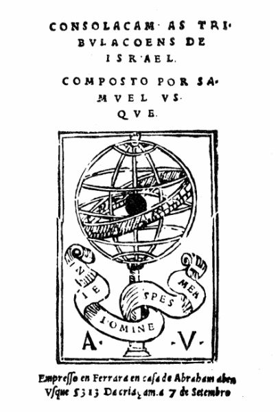

Catalogo
Clicca sulle immagini per aprire la scheda completa

Lettera di Beatriz de Luna (alias Gracia Nasi) al duca Ercole II d'Este
Autore: Gracia NasiVIAF
Data: 13 settembre 1549
Collocazione: Archivio di Stato di Modena
Vedi scheda
Biblia de Ferrara
Autore: Johan RadermacherVIAF Gracia NasiVIAF, Yom Tob AthiasVIAF, Abraham UsqueVIAF
Data: 1553
Collocazione: National library of Portugal

Donna in rosso con bambino (Gracia Nasi?)
Autore: Agnolo BronzinoVIAF
Data: 1540 circa
Collocazione: National Gallery of Art, Washington DC

Francobollo commemorativo dedicato dallo Stato di Israele a Gracia Nasi
Autore: n.d.
Data: 1991
Collocazione: n.d.

Medaglia Gracia Nasi "La Chica"
Autore: Pastorino di Giovan Michele de' PastoriniVIAF
Data: 1558
Collocazione: Jewish Museum of New York

Pietra commemorativa per i 500 anni di Gracia Nasi
Autore: n.d.
Data: 2011
Collocazione: Dona Gracia Museum Tiberiade

Traduzione della lettera del Gran Visir Rustem Pascià a Ercole II d'Este
Autore: Ibrahim BeyVIAF
Data: 1558
Collocazione:Archivio di Stato di Modena

Documento di credito Gracia Benveniste
Autore: Cancelleria estense
Data: n.d.
Collocazione: Archivio di Stato di Modena

Lettera di Brianda al duca Ercole II d'Este
Autore: Brianda de Luna
Data: 1547
Collocazione:Archivio di Stato di Modena

Frontespizio Consolaçam ás tribulaçoens de Israel
Autore: Samuel UsqueVIAF
Data: 1553
Collocazione: non più esistente
Podcast della conferenza "Il denaro e le donne: Gracia Nasi, una finanziera del '500"
Autore: prof. Alessandro BarberoVIAF
Data: 2019
Collocazione: Intesa Sanpaolo Onair